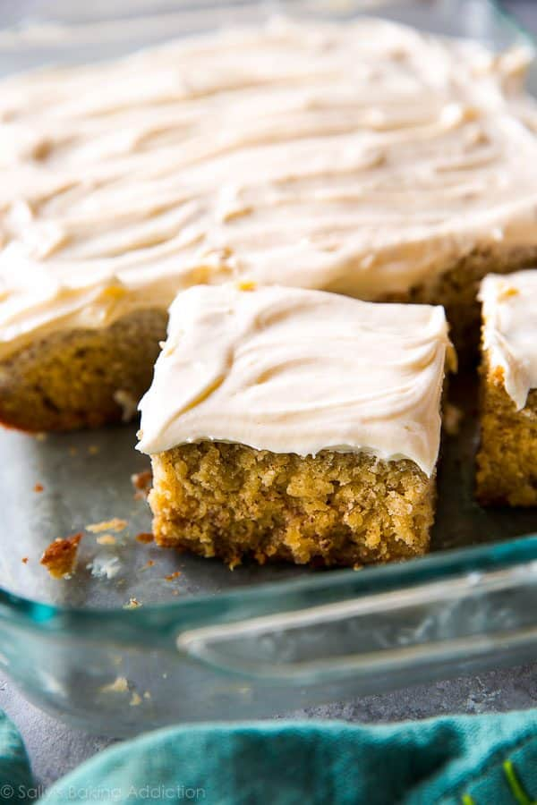

The Best Banana Cake
Sally McKenney Sally McKenney is a professional baker, food photographer, and cookbook author. Since 2011, she has been sharing meticulously tested recipes and step-by-step tutorials, helping home bakers gain confidence in the kitchen. Over the years, her dedication to approachable baking has built a loyal community of millions. Her work has been featured on Good Morning America, in People Magazine, and on popular sites like BuzzFeed, HuffPost, The Kitchn, and Country Living.
Ingredients
- 1 and 1/2 cups (345g) mashed bananas
- 3 cups (375g) all-purpose flour
- 1 teaspoon baking powder
- 1 teaspoon baking soda
- 1/2 teaspoon ground cinnamon
- 1/2 teaspoon salt
- 3/4 cup (12 Tbsp; 170g) unsalted butter,
- 1 cup (200g) granulated sugar
- 1/2 cup (100g) packed light or dark brown sugar
- 3 large eggs, at room temperature
- 2 teaspoons pure vanilla extract
- 1 and 1/2 cups (360ml) buttermilk, at room temperature*
- Cream Cheese Frosting :8 ounces (226g) full-fat brick cream cheese, softened to room temperature
- 1/2 cup (8 Tbsp; 113g) unsalted butter,
- 3 cups (360g) confectioners’ sugar, plus an extra 1/4 cup if needed
- 1 teaspoon pure vanilla extract
- 1/8 teaspoon salt
Steps
- Preheat the oven to 350°F (177°C) and grease a 9×13-inch pan
- Make the cake: Mash the bananas. I usually just use my mixer for this! Set mashed bananas aside.
- Whisk the flour, baking powder, baking soda, cinnamon, and salt together. Set aside.
- Beat the butter on high speed until smooth and creamy—about 1 minute. Add both sugars and beat on high speed for 2 minutes until creamed together. Add the eggs and the vanilla. Beat on medium-high speed until combined, then beat in the mashed bananas. With the mixer on low speed, add the dry ingredients in three additions alternating with the buttermilk and mixing each addition just until incorporated. Do not overmix. The batter will be slightly thick and a few lumps is OK.
- Spread batter into the prepared pan. Bake for 45–50 minutes.
- In a large bowl using a handheld or stand mixer fitted with a paddle or whisk attachment, beat the cream cheese and butter together on high speed until smooth and creamy. Add 3 cups confectioners’ sugar, vanilla, and salt. Beat on low speed for 30 seconds. Spread the frosting on the cooled cake. Refrigerate for 30 minutes before serving. This helps sets the frosting and makes cutting easier.